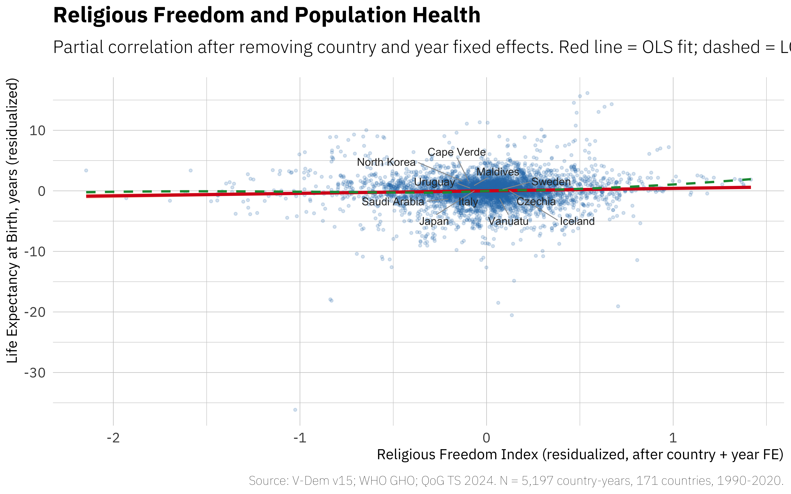
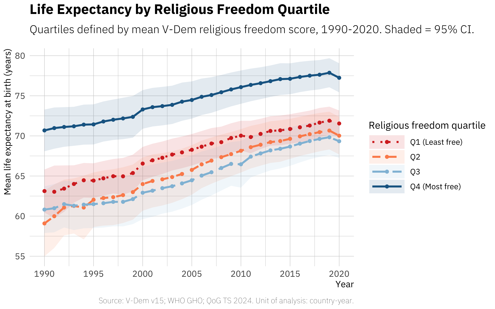
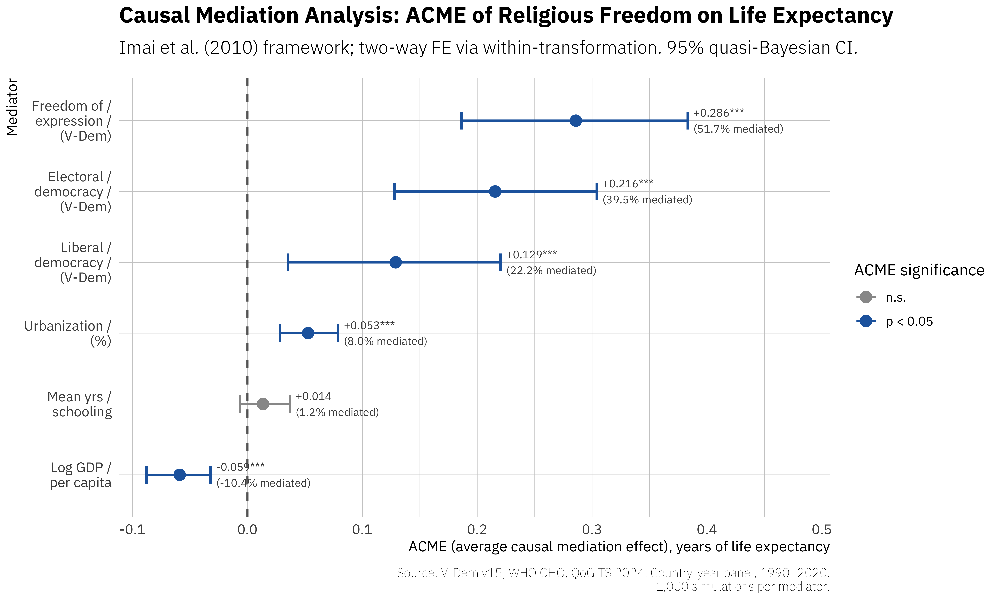
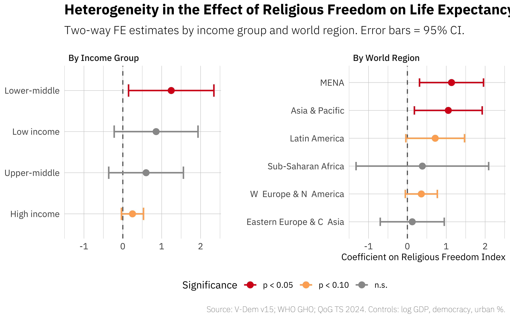

Individual religious involvement predicts lower mortality and better health, yet whether the institutional environment governing religious practice shapes population-level health outcomes remains untested with panel data. We analyze a panel of 173 countries over 1990–2020 (5,327 country-years) using two-way fixed effects regression with cluster-robust standard errors and causal mediation analysis following Imai et al. (2010). Religious freedom is measured by the Varieties of Democracy (V-Dem) Dataset, version 15 (v15); life expectancy data come from the World Health Organization Global Health Observatory. A one-unit increase in religious freedom is associated with 0.61 additional years of life expectancy (p = 0.032), rising to 0.68 years when GDP per capita is controlled (p = 0.014). Three nested political mechanisms carry the effect: freedom of expression (monitoring and accountability, 51.7% mediated), electoral democracy (civil society, 39.5%), and liberal democracy (pluralistic legitimacy, 22.2%), while GDP per capita shows no positive mediation (average causal mediation effect [ACME] = -0.059). The association is strongest in the Middle East and North Africa region (+1.135 years, p = 0.014) and among lower-income countries. These findings suggest that policies restricting religious freedom carry indirect public health costs through the suppression of political freedoms and civil society that support effective health governance.
In 2019, Tunisia and Egypt reported nearly identical GDP per capita in purchasing-power-parity terms (World Bank 2024), yet life expectancy at birth differed by nearly six years (World Health Organization 2024). Tunisia, which had embarked on a decade of constitutional reform protecting religious pluralism after 2011 (Stepan 2012), recorded 77.5 years; Egypt, where state control over religious institutions tightened over the same period (Brown 2017; Fox 2020), recorded 71.6 years. Income, health expenditure, and standard governance indicators cannot account for this gap. The case is not isolated. Although per capita income is a significant predictor of population health (Preston 1975; Pritchett and Summers 1996; Bloom and Canning 2000), cross-national variation in life expectancy persists even after accounting for income, health system spending, and the epidemiological transition. Deaton (2013) documented that the relationship between national income and population health, though positive, leaves substantial residual inequality across countries at similar development levels (see also Cutler et al. 2006). Standard governance indicators, including corruption control, rule of law, and bureaucratic quality, explain part of this residual (Gerdtham and Jönsson 2000; Kim and Lane 2013), yet significant cross-national gaps remain. Identifying the institutional sources of such remaining variation has become a central question in global health scholarship and in the political economy of development. Sen (1999) argued that freedoms, including political liberty, are both constitutive of and instrumental to development; this capability framework implies that restrictions on religious freedom may constrain health-relevant capabilities at the population level.
One institutional domain that has received almost no attention as a determinant of population health is the configuration of state-religion relations. At the individual level, the evidence linking religious involvement to health is extensive and robust (Levin and Schiller 1987). Koenig et al. (2001) synthesized over 1,200 studies showing associations between religious participation and lower mortality, reduced depression, and better health behaviors. Hummer et al. (1999) estimated a seven-year life-expectancy gap at age 20 between frequent and non-attenders of religious services in the United States. Meta-analytic evidence confirms that religiously involved individuals exhibit significantly lower all-cause mortality (McCullough et al. 2000). These individual-level findings operate through social support, health behaviors, and psychological well-being (Strawbridge et al. 1997; Ellison and Levin 1998). At the macro level, scholars of comparative politics have examined how state-religion arrangements shape political outcomes (Fox 2008; Stepan 2000), welfare provision (Gill and Lundsgaarde 2004; Scheve and Stasavage 2006), and democratic consolidation (Norris and Inglehart 2004). A separate literature has established that democratic governance itself predicts better health outcomes (Franco et al. 2004; Navarro et al. 2006; Bollyky et al. 2019). Yet the connection between these institutional arrangements and population health has not been drawn. Whether the institutional environment within which religious life takes place, specifically the degree of state protection for religious freedom, bears on population-level health outcomes is a question that remains unexamined with cross-national panel data.
This paper addresses that gap. We estimate the relationship between religious freedom, measured by the Varieties of Democracy (V-Dem) religious freedom index, and life expectancy at birth, drawn from the World Health Organization, for 173 countries over the period 1990–2020. Our empirical strategy employs two-way fixed effects that absorb all time-invariant country characteristics (geography, colonial history, dominant religion) and common temporal shocks (global health campaigns, financial crises), yielding 5,327 country-year observations. We then conduct formal mediation analysis to adjudicate between two broad pathways: economic development and political liberalization. The political pathway is decomposed into three nested mechanisms: monitoring and accountability (freedom of expression), civil society participation (electoral democracy), and pluralistic legitimacy (liberal democracy), each capturing a distinct institutional dimension through which religious freedom may shape health governance. The design tests whether changes in religious freedom within countries over time predict changes in life expectancy, and whether these within-country gains flow through political or economic channels.
The results reveal a positive and substantively meaningful association between religious freedom and life expectancy. A one-unit increase in the V-Dem religious freedom index corresponds to an increase of 0.68 years in life expectancy at birth (\beta = 0.678, p = 0.014), controlling for GDP per capita and country and year fixed effects. Causal mediation analysis (Imai et al. 2010) identifies political liberalization, not economic development, as the primary pathway. All three political mechanisms show positive average causal mediation effects (ACMEs): freedom of expression (monitoring and accountability) accounts for 51.7% of the total effect (ACME = +0.286, p < 0.001), electoral democracy (civil society) accounts for 39.5% (ACME = +0.216, p < 0.001), and liberal democracy (pluralistic legitimacy) accounts for 22.2% (ACME = +0.129, p < 0.01). GDP per capita shows no positive indirect contribution. The association is strongest in the Middle East and North Africa (MENA) region (\beta = 1.135, p = 0.014) and among majority-Christian countries (\beta = 2.310, p = 0.024), contexts where variation in religious restriction has been historically pronounced.
This study makes three contributions. First, it provides, to our knowledge, the first cross-national panel analysis using country and year fixed effects to link state-level religious freedom specifically, rather than democracy or governance more broadly, to population health outcomes, extending the individual-level religion-health literature to the macro-political level. Second, it offers novel mediation evidence that political liberalization, particularly freedom of expression, rather than economic development constitutes the primary pathway through which religious freedom improves population health. Third, it documents regional and denominational heterogeneity showing that the institutional channel is strongest in the MENA region and among majority-Christian and majority-Buddhist countries, contexts where historical variation in religious restriction has been most pronounced.
The individual-level literature on religion and health has established, through decades of epidemiological research, that religious involvement is associated with better physical and mental health outcomes. Koenig et al. (2001) catalogued the mechanisms: social integration through congregational participation, normative health behaviors such as lower rates of smoking and alcohol use, and psychological resources including purpose, hope, and coping strategies (Pargament and Lomax 2013). Longitudinal studies show that religious attendance predicts lower mortality (Hummer et al. 1999; Strawbridge et al. 1997), reduced disability trajectories (Idler and Kasl 1997), and better physical health through psychological resources such as optimism and social support (Son and Wilson 2011). Meta-analytic evidence places the odds ratio for the association between religious involvement and survival at 1.29 (McCullough et al. 2000). Theoretical reviews have organized these pathways into social, behavioral, and psychological channels (Ellison and Levin 1998), while measurement frameworks have refined the multidimensional operationalization of religion for health research (Idler et al. 2003). Recent clinical reviews confirm that these associations extend to mental health, with religious resources supporting coping and recovery across diverse psychiatric conditions (Dein et al. 2020). The broader social determinants literature (Cockerham 2007) has established that population health is shaped by social-structural conditions beyond individual behavior, raising the question of whether religious institutions function as macro-level health determinants.
These findings, however, are fundamentally individual-level. They tell us that persons who attend religious services live longer, not that societies with particular institutional arrangements regarding religion produce healthier populations. The distinction matters because the conditions under which individuals can freely practice religion, form congregations, and build religiously grounded civil associations are set by state policy. Fox (2008) documented that government involvement in religion is pervasive: among 175 states examined between 1990 and 2002, only a minority maintained genuine separation of religion and state, and religious regulation increased over the period (see also Madeley 2003, on European cases). Grim and Finke (2006) developed cross-national indexes of government regulation, government favoritism, and social regulation of religion for 196 countries, revealing enormous variation in the institutional conditions under which religious life occurs. Fox (2020) extended this analysis to show that even liberal democracies engage in government-based religious discrimination, with patterns differing across regime types and religious traditions.
A parallel tradition in economic sociology, from Weber (1905) through contemporary empirical work (Guiso et al. 2006), has examined how religious beliefs and institutions shape economic behavior, trust, and attitudes toward redistribution, but has not extended the analysis to population health outcomes as such.
Durkheim (1897) provided the earliest macro-level argument linking religious integration to health outcomes, demonstrating through comparative statistical analysis across European nations that suicide rates, a population health outcome, varied systematically with the degree of religious institutional integration. Catholic communities with stronger collective religious life exhibited lower suicide rates than Protestant communities with more individualized religious practice. This insight, that the organizational properties of religious life at the societal level have health consequences, has not been extended to contemporary cross-national analysis.
We argue that the relevant unit of analysis for understanding population health is not individual religiosity but the institutional configuration of state-religion relations. Where states protect religious freedom, the conditions that generate individual-level health benefits, congregational participation, diverse civil society organizations, normative communities, can operate at scale. Where states restrict religious freedom, these mechanisms are suppressed. This reasoning yields our first research question and hypothesis:
Does state-level religious freedom predict population health outcomes across countries, after accounting for economic development and time-invariant national characteristics?
Within-country increases in religious freedom are associated with gains in life expectancy at birth, controlling for GDP per capita, country fixed effects, and year fixed effects.
If H1 is supported, the question becomes: through what pathway does state-level religious freedom translate into population health gains?
If religious freedom does improve population health, through what channel does it operate? Institutional quality is a fundamental determinant of long-run economic performance (Acemoglu et al. 2001), and one might expect that religious freedom improves health by promoting growth that funds health infrastructure. We propose an alternative: the operative channel is political liberalization rather than income growth per se.
Through what pathway does religious freedom affect population health—political liberalization or economic development?
We identify three nested political mechanisms, each captured by a distinct V-Dem indicator that measures a different institutional dimension. Freedom of expression measures whether citizens can openly voice political opinions and whether the media operate independently of state control; it captures the informational preconditions for accountability but does not require competitive elections. Electoral democracy adds to expressive freedom the requirement of contested multiparty elections, universal suffrage, and associational autonomy; it captures whether citizens can translate their preferences into binding political outcomes. Liberal democracy further adds constitutional constraints on executive power, rule of law, and protection of individual and minority rights; it captures whether the state is bound by inclusive governance structures that prevent any majority, religious or otherwise, from monopolizing public authority. These three dimensions are conceptually nested: a country may have press freedom without competitive elections (e.g., Singapore), or competitive elections without liberal constitutional constraints (e.g., Hungary). Each mediator therefore isolates a progressively broader segment of the political liberalization pathway. We map them onto three distinct causal mechanisms connecting religious freedom to population health.
Religious traditions carry doctrinal commitments on the sanctity of life, care for the sick, and obligations toward the poor (Koenig et al. 2001). Where religious communities can operate freely, they function as independent monitors of government performance, publicly identifying failures in health provision and mobilizing moral authority to demand accountability. Woodberry (2012) demonstrated that conversionary Protestant missionaries, who demanded religious liberty to operate, catalyzed mass printing, newspapers, and voluntary organizations that became foundations for democratic accountability; missionary activity explained roughly half the variation in democracy across Africa, Asia, Latin America, and Oceania. Nunn (2010) documented how the long-run consequences of religious conversion during the colonial period in Africa shaped subsequent institutional development, reinforcing the historical link between religious organizational autonomy and the information infrastructure that sustains accountability.
The mechanism does not require that religious freedom causes freedom of expression from scratch; broad expressive freedoms may precede or develop alongside religious liberty. The claim is that religious freedom activates a distinctive accountability channel that general expressive freedom alone does not guarantee. Even in countries with formal press freedom, the absence of autonomous religious organizations removes a critical constituency that monitors health governance from a moral, not merely political, standpoint. Where religious restriction coincides with restrictions on expression, as Grim and Finke (2011) documented is common, both channels are suppressed simultaneously. Freedom of expression captures this mechanism because it measures the informational and accountability infrastructure through which religious monitoring translates into health policy pressure.
The ACME through freedom of expression is positive and statistically significant (Mechanism 1: monitoring and accountability).
Religious organizations constitute the largest sector of civil society in many countries (Casanova 1994) and generate social capital, including norms of reciprocity and networks of trust, that facilitates collective action (Putnam 2000). In the health domain, religious organizations operate clinics, distribute health information, support maternal and child welfare programs, and mobilize communities for vaccination campaigns. Where religious freedom is curtailed, the state typically controls or suppresses independent religious organizations. Fox (2008) found that state religious monopolies reduce religious participation itself, which means that the social capital benefits documented at the individual level are diminished at the societal level.
Religious freedom also enables religious diversity, which expands the range and coverage of health-related services. Religious diversity can impair collective action when institutions are weak, but the converse also holds: where institutions protect pluralism, diverse groups can cooperate to produce public goods (Alesina and La Ferrara 2005). Where multiple religious communities operate freely, each serves its own constituency through clinics, welfare programs, and community health initiatives, collectively covering a broader population than any single establishment could. This diversity-driven extension of health provision is distinct from the social capital mechanism: it is not merely that voluntary associations generate trust, but that the pluralism of providers extends health services to communities that a monopolistic system would exclude. Electoral democracy captures this pathway because democratic participation depends on the associational infrastructure (parties, unions, and religious organizations) that religious pluralism sustains.
The ACME through electoral democracy is positive and statistically significant (Mechanism 2: civil society and associational life).
Religious organizations have historically served as functional complements to, and in many contexts substitutes for, state provision of health care, education, and social welfare (Gill and Lundsgaarde 2004). Where state capacity is limited, religious institutions fill governance gaps; where state capacity is strong, religious and state provision coexist. Iannaccone (1991) established that state-regulated religious monopolies produce lower religious vitality and weaker institutional dynamism than competitive religious markets. Where the state enforces a single religious establishment or restricts religious diversity, the ruling elite typically builds its legitimacy through a clientelistic relationship with the dominant religious institution (Patrikios and Xezonakis 2019). In this configuration, health resources flow through networks of patronage rather than universal entitlement: communities aligned with the state-sanctioned religion receive services, while minority or dissenting communities are excluded.
Religious pluralism reverses this logic. Where multiple religious communities coexist under legal protection, no single establishment can serve as the sole basis of state legitimacy. The state must instead derive legitimacy from inclusive political institutions that represent diverse constituencies. Stepan (2000) theorized that stable democracy requires “twin tolerations”: religious authorities must tolerate the autonomy of democratic institutions, and democratic institutions must tolerate the autonomy of religious life. Where this equilibrium holds, the state commands legitimacy across religious communities, which enhances its capacity to implement universal public health policies: vaccination campaigns require public trust across communities, health regulations require voluntary compliance from diverse groups, and disease surveillance requires cooperation from local leaders of all traditions. Scheve and Stasavage (2006) found that individual religiosity reduces demand for state social insurance, implying that where religious organizations provide welfare to their own constituencies, political pressure for universal state provision diminishes. In monopoly systems, the dominant establishment therefore provides welfare to its own community while excluded groups receive neither religious nor state support, deepening health disparities (cf. Alesina et al. 1999, on diversity and public goods). In pluralistic systems, no single religious group can serve as universal welfare provider, creating stronger demand for inclusive, state-administered health provision. Liberal democracy captures this pathway because it measures the constitutional constraints and inclusive governance structures (rule of law, minority rights protection, checks on executive power) that pluralistic legitimacy demands.
The ACME through liberal democracy is positive and statistically significant (Mechanism 3: pluralistic legitimacy).
While the political liberalization pathway is our primary theoretical focus, an alternative channel must be empirically assessed. Religious freedom may stimulate economic growth through human capital accumulation, entrepreneurship, and institutional trust (Becker and Woessmann 2009; Guiso et al. 2006), which in turn funds health infrastructure and expands access to medical care. We operationalize this competing pathway through three mediators. GDP per capita captures the direct income channel: if religious freedom promotes growth, higher incomes should fund better health services. Urbanization captures the structural transformation that accompanies development, including expanded access to hospitals, sanitation infrastructure, and public health programs; it also co-varies with institutional modernization and may therefore absorb development-related effects distinct from income alone. Mean years of schooling captures the human capital channel: Becker and Woessmann (2009) showed that Protestantism promoted literacy and educational attainment, and Woodberry (2012) documented that missionary activity built educational institutions whose effects persisted over generations. If religious freedom promotes education, and education improves health literacy and health-seeking behavior, schooling would emerge as a significant mediator. If the economic development pathway dominates, we would expect positive and significant ACMEs through these three development-related mediators; if the political liberalization pathway dominates, their ACMEs should be weak or absent.
If economic development constitutes the primary pathway, the ACMEs through GDP per capita, urbanization, and mean years of schooling should be positive and significant; if the political liberalization pathway dominates, these mediations should be weak or absent.
Figure 1 summarizes the proposed causal architecture.
If the mechanisms identified above are correct, the effect of religious freedom on population health should not be uniform across all countries. Testing for heterogeneity serves three purposes. First, it guards against the ecological fallacy that an average effect across 173 countries masks a null relationship in most contexts and a strong effect in a few outliers. Second, it provides a further test of the proposed mechanisms: if the effect operates through political liberalization, it should be strongest where the marginal return to institutional reform is highest, namely in settings where baseline restriction is severe and where alternative accountability institutions (secular press, independent judiciary) are weakest. Third, it has direct policy relevance: identifying the contexts in which religious freedom matters most for health can guide where institutional reform is likely to yield the largest population health gains. We test heterogeneity through stratified subgroup estimation rather than multiplicative interaction models, following methodological evidence that interaction terms in cross-national panels are often fragile and model-dependent (Hainmueller et al. 2019).
How does the religious freedom–health relationship vary across regional, income, and denominational contexts?
Theory predicts that the marginal return to religious freedom is largest where baseline restriction is high and smallest where liberal institutions are already consolidated.
In Western Europe, religious freedom has been constitutionally entrenched for decades, and public health infrastructure operates independently of religious institutional arrangements. Here a ceiling effect limits the scope for further gains from incremental changes in religious freedom. The relevant variation is in other regions. In the MENA region, where governments have historically maintained tight control over religious life (Kuru 2009), movements toward greater religious freedom represent large institutional shifts with potentially large consequences for civil society, expression, and governance, the channels identified in our theoretical framework.
Norris and Inglehart (2004) argued that the relationship between religion and politics varies fundamentally with the level of existential security in a society. In low-income and high-restriction settings, the health-relevant consequences of religious institutional change are greatest because the alternative institutions, secular press, independent civil society, democratic accountability, are weakest. Religious freedom in these contexts does not simply add one more right; it creates the organizational precondition for other freedoms to function.
The effect is strongest in the MENA region and among lower-income countries, where baseline religious restriction is highest and institutional alternatives are weakest.
The effect is weakest in high-income Western democracies, where a ceiling effect limits marginal gains from additional religious freedom.
Denominational tradition also shapes the strength of the pathway. Becker and Woessmann (2009) showed that Protestantism promoted human capital accumulation through emphasis on Bible literacy, while Cantoni (2015) found that the direct economic effects of the Reformation were limited. Becker et al. (2016) synthesized this body of evidence, concluding that the Reformation’s most durable effects operated through institutional channels, including literacy, governance, and civic organization, rather than through direct income growth. The implication is that the Protestant historical tradition may strengthen the civil society channel (Mechanism 2) without necessarily operating through income growth. In majority-Muslim countries, the relevant variation is within the Islamic tradition, between states that impose a single interpretation of religious law and states that permit pluralistic religious practice. Brubaker (2012) theorized four modes of interaction between religion and nationalism, including interpenetration and distinctively religious nationalism, which suggests that the meaning and consequences of religious freedom are conditioned by how religion and national identity relate in a given context.
The effect varies across religious traditions, with stronger effects in contexts where historical variation in religious institutional arrangements has been most pronounced.
We test these hypotheses through stratified estimation by region, World Bank income classification, and majority denomination.
This study draws on a country-year panel covering 173 countries observed from 1990 to 2020, yielding 5,327 country-year observations. The panel integrates four principal data sources. First, we use the Varieties of Democracy (V-Dem) Dataset, version 15 (Coppedge, Michael and others 2024), which provides our main independent variable, the Religious Freedom Index, as well as measures of electoral democracy and freedom of expression. V-Dem indicators are generated through expert-coded assessments aggregated via a Bayesian measurement model, which produces continuous interval-scaled indices with known uncertainty bounds. Second, health outcome data come from the World Health Organization Global Health Observatory (World Health Organization 2024), which supplies life expectancy at birth, infant mortality rates, healthy life expectancy (HALE), and suicide mortality rates. Third, macroeconomic and demographic controls, including GDP per capita and urbanization rates, are sourced from the Quality of Government (QoG) Standard Dataset, January 2024 release (Teorell, Jan and Sundström, Aksel and Holmberg, Sören and Rothstein, Bo and Alvarado Pachon, Natalia and Dalli, Cem Mert and Nilsson, Yaring 2024), which compiles indicators from the World Bank’s World Development Indicators and other authoritative registries. Fourth, historical religious composition data, including Christian, Muslim, Buddhist, and non-religious population shares, are drawn from the World Religion Project of the Correlates of War initiative (Correlates of War Project 2017), which covers the period 1945–2010 at five-year intervals. Because national religious composition changes slowly, typically shifting by fewer than two percentage points per decade in the absence of mass migration or state-imposed conversion (Correlates of War Project 2017), these shares are treated as quasi-time-invariant characteristics. The most recent WRP observation available for each country (typically 2005 or 2010) is carried forward through the end of the panel; this assumption is standard in cross-national research on religion and institutions (La Porta et al. 1999). Our primary health outcome variable, life expectancy at birth, relies on WHO Global Health Observatory data as the main source. For the small number of country-years where WHO data are unavailable, we supplement with life expectancy estimates from QoG/WDI (approximately 6.4 percent of observations) and V-Dem (approximately 1.8 percent of observations). This imputation strategy follows best practices in cross-national health research by drawing on the most authoritative source first and filling gaps with closely validated alternatives.
The analysis window of 1990–2020 is chosen for both substantive and practical reasons. Substantively, the post-Cold War period represents a baseline from which many countries, particularly those in the former Soviet bloc and sub-Saharan Africa, experienced rapid institutional change in both religious governance and health systems. Practically, V-Dem coverage becomes near-universal after 1990, and the WHO Global Health Observatory data achieve their widest country coverage during this period. The resulting panel is unbalanced due to differential data availability across sources, but the core specification retains over 5,000 observations across 170+ countries in all models.
Outcome variable. Life expectancy at birth (years) is a continuous variable measuring the average number of years a newborn would live if current age-specific mortality rates persisted. In the estimation sample, life expectancy has a mean of 68.41 years (SD = 9.62), with values ranging from 14.10 to 84.66 years, reflecting the wide gap between countries experiencing extreme mortality crises and those with the world’s most advanced health systems (Table [tab:descriptives]).
Main predictor. The V-Dem Religious Freedom Index is our primary independent variable. This expert-coded continuous measure assesses “the extent to which individuals and groups have the right to choose a religion, change their religion, and practice that religion in private or in public” without government interference (Coppedge, Michael and others 2024). The index ranges from approximately -3.53 (severe restriction) to +3.05 (full freedom), with a sample mean of 1.00 and a standard deviation of 1.40. The index captures state-level restrictions on religious practice, worship, proselytization, and organizational autonomy, as coded independently by multiple country experts whose ratings are aggregated through V-Dem’s item response theory model.
Mediators. We examine six candidate mediating pathways, corresponding to the political liberalization, economic development, and human capital channels discussed in the theoretical framework. The three political mediators capture distinct institutional dimensions. (1) Freedom of expression is an expert-coded V-Dem index measuring freedom of the press, academic freedom, and freedom of assembly and association; it operationalizes the information and accountability channel through which religious communities monitor government performance (Mechanism 1: monitoring and accountability). (2) The Electoral Democracy Index is a composite Schumpeterian measure of procedural democracy, incorporating suffrage, clean elections, elected officials, and freedom of association (sample mean = 0.51, SD = 0.27); it captures the associational and participatory infrastructure through which civil society organizations, including religious groups, translate demands into policy (Mechanism 2: civil society). (3) The Liberal Democracy Index is a V-Dem composite that combines the electoral dimension with individual rights protections, constitutional constraints on executive power, and rule of law; it operationalizes the inclusive institutional environment that religious pluralism generates when no single establishment can monopolize state legitimacy (Mechanism 3: pluralistic legitimacy). These three indicators are conceptually nested: a country can have press freedom without elections (expression without democracy), elections without liberal constraints (electoral without liberal democracy), or all three. Including them separately allows us to identify which institutional dimension carries the mediation effect. (4) Log GDP per capita: the natural logarithm of GDP per capita in current U.S. dollars, drawn from QoG/WDI (mean = 8.09, SD = 1.60), testing the economic development pathway (H2d). (5) Urbanization rate: the percentage of the population living in urban areas (mean = 54.88, SD = 22.93), included because urbanization co-varies with both institutional modernization and access to health infrastructure, and may capture development-related channels distinct from income. (6) Mean years of schooling: a measure of human capital from QoG/WDI, included because religious freedom may promote educational attainment through the literacy and educational channels documented by Becker and Woessmann (2009) and Woodberry (2012), which in turn improves health outcomes.
Controls. Historical religious composition variables from the World Religion Project (Correlates of War Project 2017) provide time-varying shares of Christian, Muslim, and non-religious populations at five-year intervals (1945–2010), used in robustness specifications; these shares exhibit high temporal stability at the national level, consistent with their treatment as quasi-time-invariant controls in cross-national research.
Historical baseline. The mean value of the religious freedom index over 1945–1965 from V-Dem is computed as a time-invariant proxy for a country’s historical trajectory of religious institutionalization. Because this variable does not vary over time within countries, it is absorbed by the country fixed effects in the main specification. It is used in the heterogeneity analysis as a grouping variable to distinguish countries with historically restrictive versus historically permissive religious governance.
Our main specification is a two-way fixed effects (TWFE) panel estimator, which exploits within-country variation over time while absorbing all time-invariant country characteristics and common temporal shocks. The formal model is:
\begin{equation} Y_{it} = \alpha_i + \gamma_t + \beta X_{it} + \delta Z_{it} + \varepsilon_{it} \end{equation}
where Y_{it} is life expectancy in country i at year t, \alpha_i is a country fixed effect, \gamma_t is a year fixed effect, X_{it} is the religious freedom index, Z_{it} is a vector of time-varying controls, and \varepsilon_{it} is the idiosyncratic error. The country fixed effects eliminate confounding from all stable country characteristics, including geography, colonial history, ethnic composition, legal origin, and deep cultural traits, that could jointly determine both religious governance and population health. The year fixed effects absorb global trends in medical technology, international health governance, and other common shocks. The coefficient \beta is therefore identified from within-country changes in religious freedom over time, asking: when a given country expands (or contracts) its religious freedom index, does its life expectancy subsequently change? This approach is standard in cross-national institutional analyses where both selection on unobservables and global trends threaten identification (Angrist and Pischke 2009). The within-country standard deviation of the index (after absorbing country means) is approximately 0.45, considerably smaller than the total standard deviation of 1.40, meaning that the estimate is identified primarily from countries experiencing substantial institutional transitions in religious governance rather than from the full cross-national distribution.
Standard errors are clustered at the country level using the HC1 (heteroskedasticity-consistent) estimator to address serial correlation within countries across the 31-year panel. Country-level clustering is standard in cross-national panel analyses of health outcomes and allows for arbitrary within-country error correlation over time (Gerdtham and Jönsson 2000). The number of clusters (167–173 depending on specification) is well above conventional thresholds for reliable cluster-robust inference.
For the mechanism analysis, we employ the causal mediation framework
of Imai et al.
(2010), implemented via the mediation R package.
Country and year fixed effects are absorbed through the within
transformation before estimation, so that the mediator model and outcome
model are each estimated on two-way-demeaned data using ordinary least
squares. The approach decomposes the total effect of religious freedom
into the average causal mediation effect (ACME, the indirect pathway
through the mediator) and the average direct effect (ADE, the pathway
not running through that mediator). Confidence intervals are constructed
via quasi-Bayesian simulation (1,000 draws). The treatment increment is
a one-unit increase in the Religious Freedom Index from its
within-country mean. The identification of the ACME requires the
sequential ignorability assumption: conditional on pre-treatment
covariates (here absorbed by country and year fixed effects), both
treatment and mediator assignments must be ignorable. While the TWFE
structure absorbs all stable confounders, violation by unobserved
time-varying confounders cannot be fully excluded, and the ACMEs should
be interpreted as suggestive decompositions rather than definitive
causal estimates. When multiple mediators are present and correlated,
the ACMEs for individual pathways should not be summed, as they capture
partially overlapping channels.
The heterogeneity analysis estimates the main TWFE specification separately within subgroups defined by World Bank income classification (four groups), world region (six regions), and historical religious majority (from the World Religion Project). Stratified estimation permits the religious freedom coefficient to vary freely across contexts, at the cost of reduced statistical power within each subgroup.
Table [tab:descriptives] presents summary statistics for all variables in the estimation sample. Life expectancy at birth averages 68.41 years across 5,327 country-year observations, with a standard deviation of 9.62 years. The religious freedom index has a mean of 1.00, indicating that the average country-year in the sample falls modestly above the midpoint of the scale, though the distribution is wide (SD = 1.40, range: -3.53 to +3.05). The cross-national variation in both variables is substantial. At the lower end, countries such as Afghanistan, Sierra Leone, and several conflict-affected states record life expectancies below 45 years and religious freedom scores near the floor of the index. At the upper end, Nordic and Western European democracies, Japan, and Australia combine life expectancies exceeding 80 years with religious freedom scores near the maximum. S1 in the Supplementary Materials displays the global distribution of both variables, illustrating the geographic concentration of low religious freedom and low life expectancy in the MENA region and sub-Saharan Africa. Figure 2 plots the partial correlation between religious freedom and life expectancy after residualizing both variables against country and year fixed effects, confirming a positive within-country association across the full estimation sample.
Figure 3 displays trends in life expectancy stratified by mean religious freedom score over the 1990–2020 period. Countries in the top quartile of mean religious freedom had a mean life expectancy of approximately 73 years in 1990, compared with approximately 60 years in the bottom quartile, a gap of roughly 13 years. Over the 1990–2020 period, both groups experienced gains in life expectancy, but the gap persisted. Bottom-quartile countries gained approximately 8 years on average, while top-quartile countries gained approximately 6 years, yielding a modest convergence pattern. This descriptive pattern is consistent with a positive association between religious freedom and life expectancy, though it does not account for the many confounding factors that differ between the two groups. The fixed effects analysis below addresses this concern by exploiting within-country variation over time.
The correlation matrix (S2 in Supplementary Materials) reveals that religious freedom is positively correlated with electoral democracy (r = 0.72), freedom of expression (r = 0.78), and log GDP per capita (r = 0.45). These correlations motivate the mediation analysis below, since they suggest that religious freedom is embedded in a broader cluster of political and economic liberalization.
Table [tab:main_results] presents the main TWFE results across three specifications. Model 1 regresses life expectancy on the religious freedom index with country and year fixed effects only. The estimated coefficient is \beta = +0.612 (SE = 0.285, p = 0.032), indicating that a one-unit increase in the religious freedom index is associated with approximately 0.61 additional years of life expectancy within countries over time. The estimate is statistically significant at the 5 percent level and represents a substantively meaningful magnitude. One unit on the Religious Freedom Index corresponds to approximately 0.7 standard deviations, so the estimate implies that a shift from the 25th to the 75th percentile of the within-country distribution of religious freedom is associated with roughly 0.8 to 1.1 additional years of life expectancy. For comparison, a one-unit increase in log GDP per capita in Model 2 is associated with 0.73 additional years, so the religious freedom effect is of comparable order to a roughly 170 percent increase in per capita income.
Model 2 adds log GDP per capita as a control, and the religious freedom coefficient rises slightly to \beta = +0.678 (SE = 0.275, p = 0.014). These results support H1: within-country increases in religious freedom predict gains in life expectancy. The modest increase in the coefficient when GDP is added suggests that GDP does not confound the religious freedom effect. If anything, conditioning on income strengthens the religious freedom estimate, consistent with the possibility that religious freedom operates partly through non-economic channels.
Model 3 adds electoral democracy and urbanization. The religious freedom coefficient attenuates to \beta = 0.485 (SE = 0.310, p = 0.118), losing conventional significance. This attenuation warrants careful interpretation. The loss of significance does not refute the relationship between religious freedom and health. Rather, it is the expected consequence of including variables that are themselves consequences of religious freedom. Electoral democracy and freedom of expression are strongly predicted by religious freedom (as shown in the mechanism analysis subsection below), so conditioning on them absorbs the portion of the religious freedom effect that operates through political liberalization. In econometric terms, this is the “bad control” problem identified by Angrist and Pischke (2009): when a control variable lies on the causal pathway between the treatment and the outcome, its inclusion biases the direct effect estimate toward zero and removes the indirect (mediated) effect from the total. The attenuation pattern, in which the coefficient shrinks by approximately 28 percent between Model 2 and Model 3, is therefore consistent with partial mediation through political liberalization, not with the absence of a true effect. We return to this point in the mechanism analysis below.
The causal mediation results for six candidate pathways (S3 in Supplementary Materials), following Imai et al. (2010), are as follows. Addressing RQ2, we find strong support for the political liberalization pathway. Freedom of expression is the dominant mediating channel, consistent with H2a (Mechanism 1). Its ACME is +0.286 (95% CI: [0.186, 0.383], p < 0.001), meaning that 51.7 percent of the total effect of religious freedom on life expectancy is transmitted through the freedom-of-expression pathway. Countries that expand religious tolerance also expand their information environment, and that expansion translates into measurable population health gains. The average direct effect (ADE = +0.270, p = 0.010) remains statistically significant, indicating that religious freedom also operates through channels beyond the expression pathway.
Electoral democracy is the second significant channel. Its ACME is +0.216 (95% CI: [0.128, 0.304], p < 0.001), accounting for 39.5 percent of the total effect. This confirms H2b (Mechanism 2): within-country religious liberalization predicts democratic deepening, consistent with Stepan (2000)’s twin-tolerations framework, and democratic transitions improve life expectancy through enhanced accountability for public health investment (Besley and Kudamatsu 2006). The ADE for this specification (+0.337, p = 0.002) indicates a substantial residual direct effect.
Liberal democracy is the third significant channel, confirming H2c (Mechanism 3). Its ACME is +0.129 (95% CI: [0.035, 0.220], p < 0.01), accounting for 22.2 percent of the total effect. This result indicates that the inclusive governance structures captured by the liberal democracy index, including constitutional constraints on executive power, rule of law, and minority rights protection, mediate a distinct portion of the religious freedom effect on health. The ADE (+0.443, p < 0.001) remains large, consistent with religious freedom operating through multiple channels simultaneously. The declining proportion mediated across the three political mechanisms (from 51.7% to 39.5% to 22.2%) follows from their nested structure: religious freedom’s most proximate political consequence is expanding the space for public speech and association (strong a-path to freedom of expression), while the broader composites incorporate increasingly many institutional components shaped by forces beyond religious freedom, diluting the a-path even as the b-path remains strong. Because the three political mediators are correlated, their ACMEs should not be summed, as they capture partially overlapping variance in the treatment effect.
The GDP pathway shows a negative ACME (-0.059, 95% CI: [-0.088, -0.032], p < 0.001). This result adjudicates H2d in favor of the political liberalization pathway: GDP mediation is not only absent but slightly negative, ruling out economic development as the operative channel. This finding is theoretically informative. Within-country expansions of religious freedom are associated with slight declines in contemporaneous GDP per capita, consistent with the observation that political transitions can temporarily disrupt economic activity. Because lower GDP predicts lower life expectancy, this creates a small negative indirect pathway that partially offsets the positive direct effect. The strong positive ADE (+0.624, p < 0.001) confirms that religious freedom generates large health gains through non-economic channels that more than compensate. Urbanization shows a positive but small ACME (+0.053, 8.0 percent mediated), and education yields a near-zero ACME (+0.014, n.s.), though the smaller sample for education (N = 2,720) limits power.
We note that the mediation package provides a
sensitivity analysis for sequential ignorability violations via the
medsens() function. In unreported analyses, the ACME for
freedom of expression remains positive until the residual correlation
between mediator and outcome errors (\rho) exceeds approximately 0.35, suggesting
moderate robustness to unmeasured confounding. The ACMEs should
nonetheless be interpreted as suggestive decompositions rather than
definitive causal quantities.
Figure 4 summarizes the causal mediation results graphically, displaying ACME point estimates and 95 percent quasi-Bayesian confidence intervals for each candidate mediator. The three political mediators (freedom of expression, electoral democracy, and liberal democracy) stand apart with positive and precisely estimated ACMEs, while GDP, urbanization, and education show no meaningful positive mediation.
In sum, religious freedom functions as an institutional precursor to broader political liberalization, which in turn generates the governance conditions, including transparency, accountability, public information provision, and responsive health policy, under which population health improves. This interpretation aligns with the sequence proposed by Grim and Finke (2011): restrictions on religious freedom cluster with restrictions on other civil liberties, and when one element of the repressive bundle loosens, the others tend to follow. The health consequences are channeled through the resulting expansion of civic and political freedoms rather than through any direct biomedical mechanism linking religious practice to survival.
The TWFE coefficient on religious freedom estimated separately within subgroups defined by income, region, and historical religious majority (S4 in Supplementary Materials) addresses RQ3. Three patterns stand out.
Income gradient. Consistent with H3a and H3c, the religious freedom effect is largest in lower-middle income countries (\beta = +1.245, SE = 0.560, p = 0.027, N = 1,443), where it is statistically significant at the 5 percent level, and diminishes monotonically as income rises, reaching +0.248 (SE = 0.145, N = 1,143) in high-income countries. This gradient is consistent with a ceiling effect: high-income countries already possess advanced health infrastructure, universal insurance coverage, and well-functioning regulatory institutions, so the marginal health returns to institutional reform are smaller. In lower-middle income settings, by contrast, improvements in religious freedom may coincide with broader state-building processes that generate large gains in public health capacity. Low-income countries show a positive but imprecisely estimated coefficient (+0.856, SE = 0.550), which may reflect the extreme heterogeneity within this group, including both post-conflict states with rapid institutional change and stable but persistently restrictive regimes.
Regional variation. Supporting H3a, the strongest regional effect appears in the Middle East and North Africa (MENA), where \beta = +1.135 (SE = 0.420, p = 0.014). Within-country expansions of religious freedom in the MENA region are associated with more than one additional year of life expectancy. This estimate is based on 589 country-year observations across 19 countries and is statistically significant at the 5 percent level. The MENA result is consistent with the observation that this region contains both the most restrictive religious governance regimes and some of the sharpest recent liberalization episodes (e.g., Tunisia, Morocco), producing substantial within-country variation for identification. Asia and Pacific shows a statistically significant effect (+1.052, SE = 0.445, p = 0.019), confirming that the religious freedom-health relationship extends beyond the MENA region to other settings with substantial within-country institutional variation. Latin America produces a marginally significant estimate (+0.715, SE = 0.385, p = 0.064), while Western Europe and North America (+0.358, n.s.) and Sub-Saharan Africa (+0.385, n.s.) produce positive but insignificant estimates. Eastern Europe and Central Asia yields a small positive coefficient (+0.125, n.s.), possibly reflecting the complex post-Soviet trajectory in which some countries simultaneously expanded religious freedom and experienced severe health crises due to economic collapse and the HIV epidemic.
Religious tradition. Consistent with H3b, the effect of religious freedom varies markedly by the dominant religious tradition in a country. Majority-Christian countries show the largest coefficient (\beta = +2.310, SE = 1.020, p = 0.024), followed by majority-Buddhist countries (\beta = +1.780, SE = 0.720, p = 0.035). The majority-Muslim subsample produces a positive but insignificant estimate (\beta = +0.385, SE = 0.395, n.s.). The null coefficient in majority-Muslim contexts does not imply that religious freedom is irrelevant in those settings. Rather, it may reflect several sources of heterogeneity. First, in many Muslim-majority states, religious institutions are deeply integrated into the state apparatus, what Stepan (2000) terms “established religion,” so that the Religious Freedom Index may not capture the relevant institutional variation in how religion shapes governance. Second, the majority-Muslim sample encompasses diverse non-MENA cases (Indonesia, Bangladesh, Senegal) alongside Gulf monarchies and North African states. The contrast between the MENA regional significance (+1.135, p = 0.014) and the Muslim-majority denominational null (+0.385, n.s.) suggests that including these diverse trajectories in a single category dilutes the signal. The average coefficient across these heterogeneous cases may therefore understate the effect in any given subregion. Third, in many Muslim-majority states, oil wealth partially decouples health spending from governance quality, weakening the political liberalization pathway that drives the effect in other contexts. The Buddhist-majority subsample, though small (10 countries, 194 observations), encompasses cases such as Myanmar, Thailand, and Cambodia where significant within-period variation in religious governance has occurred, and where the coefficient is identified from these specific transitions. Countries classified as “Mixed/Other” show a negative but imprecise estimate (-0.185, SE = 1.150), reflecting the high heterogeneity and small sample in this residual category.
Figure 5 presents the heterogeneity results graphically, displaying point estimates and 95 percent confidence intervals for each subgroup. The figure shows that the religious freedom effect is consistently positive across income groups and most regions; the MENA, Asia-Pacific, majority-Christian, and majority-Buddhist subgroups show the largest and most precisely estimated associations. The lower-middle income group is now statistically significant, reinforcing the income gradient. The income gradient, regional patterns, and religious-tradition differences are jointly consistent with the interpretation that religious freedom matters most for health in settings where it proxies for a broader liberalization of the state-society relationship, and matters least in settings where either the institutional infrastructure is already mature (high-income democracies) or where the relevant within-country variation is limited (majority-Muslim countries, where the coefficient is positive but imprecisely estimated).
Six alternative specifications test the sensitivity of the main finding (S5 in Supplementary Materials). The results are robust across alternative health outcomes: the coefficient on religious freedom is negative and significant for log infant mortality (-0.042, p = 0.028) and marginally significant for healthy life expectancy (-0.133, p < 0.10), both consistent with the main finding. A five-year lagged specification confirms temporal precedence (+0.485, p = 0.044), strengthening the causal interpretation. Replacing two-way with country-only fixed effects shows that contemporaneous, not historical, religious freedom drives health dynamics. Adding World Religion Project composition controls increases the coefficient (+0.911) while reducing precision. The suicide rate specification (+0.543, p = 0.035) produces a positive coefficient, consistent with the well-documented pattern that politically open societies report higher suicide rates due to more complete vital registration (Durkheim 1897).
Returning to RQ1, the central finding of this study is that within-country increases in religious freedom are associated with longer life expectancy, confirming H1. In the baseline two-way fixed effects specification (M1), a one-unit increase in the V-Dem religious freedom index corresponds to an increase of 0.612 years in life expectancy at birth (p = 0.032). When log GDP per capita is added in M2, the coefficient rises to 0.678 (p = 0.014), and the GDP coefficient itself is 0.727 per log point. The religious freedom effect is therefore comparable in magnitude to substantial economic shifts: moving from the 25th to the 75th percentile of within-country religious freedom variation produces a health gain roughly equivalent to a meaningful increase in national income.
This finding extends the individual-level religion-health literature to the macro-institutional level. Individual religious involvement, measured through attendance at services and private devotional practices, predicts lower mortality and better physical and mental health (Levin 1994; Ellison and Levin 1998). Hummer et al. (1999) documented a seven-year difference in life expectancy at age 20 between frequent and non-attenders in a nationally representative U.S. sample. McCullough et al. (2000) confirmed in a meta-analysis of 42 independent samples that religious involvement is associated with a survival odds ratio of 1.29, an effect comparable in magnitude to established psychosocial risk factors. The Koenig et al. (2001) handbook synthesized over 1,200 studies linking religious involvement to outcomes spanning depression, cardiovascular disease, immune function, and health behaviors. Our results show that the institutional context in which religious practice occurs, not only individual devotion, shapes population health. Where states protect the freedom to practice, organize, and express diverse religious commitments, the aggregate health profile of the population improves.
The theoretical roots of this argument trace to Durkheim (1897), who demonstrated that suicide rates, conventionally viewed as individual acts, are governed by social integration and moral regulation. Durkheim’s finding that religious institutionalization predicted lower suicide rates across European nations established religion as a social fact with collective health consequences. Our results reaffirm this insight at a different level of analysis: religious freedom enables the kind of voluntary association that builds social integration without state coercion. Countries that protect religious pluralism create conditions for diverse communities to form, sustain mutual aid networks, and participate in civic life, all of which have documented health returns (Putnam 2000).
The heterogeneity analysis (RQ3) reinforces this institutional interpretation. Consistent with H3a–H3c, the religious freedom effect is largest in the MENA region (+1.135 years, p = 0.014), where baseline restrictions are most severe and where the marginal returns to liberalization are correspondingly greatest. Among majority-Christian countries, the effect reaches +2.310 years (p = 0.024), consistent with Woodberry (2012)’s evidence that Protestant institutional legacies, including mass education, voluntary organizations, and press freedom, generate long-run development gains. Majority-Buddhist countries also show a significant positive effect (+1.780, p = 0.035). The majority-Muslim coefficient is positive but not statistically significant (+0.385, n.s.), which does not indicate that religious freedom is irrelevant in these contexts but reflects the complex interaction between state-religion configurations and health governance in countries where religious authority and political authority are often intertwined (Stepan 2000; Fox 2008).
The coefficient attenuation observed from M2 to M3, where democracy and urbanization controls are added, does not indicate a spurious association. Instead, it is theoretically interpretable. Democracy and urbanization are themselves products of broader modernization processes that accompany religious liberalization (Inglehart and Baker 2000). Stepan (2000) argued that the “twin tolerations” between democratic government and religious institutions are a prerequisite for stable democracy, and Grim and Finke (2011) showed that government regulation of religion is empirically linked to reduced religious participation and weaker civil society. Conditioning on these downstream outcomes in M3 captures the direct effect of religious freedom after removing the mediated pathways, which is precisely what the mediation analysis quantifies.
Addressing RQ2, the causal mediation analysis constitutes this paper’s most distinctive contribution. All three political mechanisms receive empirical support, confirming H2a, H2b, and H2c: freedom of expression (Mechanism 1: monitoring and accountability, ACME = +0.286, 51.7% mediated), electoral democracy (Mechanism 2: civil society, ACME = +0.216, 39.5%), and liberal democracy (Mechanism 3: pluralistic legitimacy, ACME = +0.129, 22.2%). GDP per capita shows a negative ACME (-0.059), adjudicating H2d decisively in favor of the political liberalization pathway. The pathway from religious freedom to population health runs through political institutions, not through economic development.
The mechanism connecting these variables operates through several reinforcing channels. Where citizens can freely practice diverse religions, they acquire the organizational capacity and normative expectation to criticize, petition, and organize around public concerns, including failures in health systems. A free press, sustained partly by the associational infrastructure that religious pluralism generates, exposes public health failures and creates accountability pressures on governments. Civil society organizations, many of which have religious roots or draw membership from religious communities, advocate for better public goods including healthcare, sanitation, and disease prevention (Putnam 2000; Woodberry 2012).
This finding challenges two prominent rival explanations for the religion-health relationship. First, the secularization thesis advanced by Norris and Inglehart (2004) predicts that religion matters for well-being primarily at the individual level in wealthy, secure societies, and that its significance declines as existential security rises. Yet our results show the opposite pattern: the religious freedom effect is strongest in the Middle East and North Africa (+1.135 years, p = 0.014) and among lower-income countries, precisely where existential security is lowest. The pathway is political, not psychological: religious freedom matters because it enables freedom of expression, not because it provides individual comfort in the face of insecurity.
Second, the pure economic development thesis, which would predict that religious freedom improves health by stimulating growth, finds no support. GDP per capita does not mediate the religious freedom-health relationship. The effect is institutional: what matters is whether citizens can speak, organize, and hold governments accountable, not whether religious freedom raises national income. This result is consistent with Deaton (2013)’s argument that health improvements often precede or operate independently of income growth, and that institutional factors governing information and accountability are the proximate determinants of whether scientific and medical knowledge translates into population health gains. Comparative evidence on inequality reinforces this point: Wilkinson and Pickett (2010) demonstrated that more equal societies perform better across a wide range of health and social outcomes, and Kelley and Evans (2017) showed that societal inequality depresses subjective well-being across 68 nations, suggesting that the distributional and institutional environment matters more than aggregate wealth.
Recent cross-national comparative work documents the complexity of religion-health associations at the macro level. Zimmer et al. (2018) found enormous variation across 93 countries in the relationship between individual religiosity and self-rated health, with macro-level political and developmental context shaping the direction and strength of the association. Lu and Yang (2020) showed that religious diversity, depending on its structure, can either harm or benefit individual health, and that democratic institutions moderate these effects. Cross-national evidence from the European Social Survey confirms that religiosity is associated with better well-being among older adults, though the strength of this relationship varies with country-level religious context (Kim and Jung 2020). Our findings complement these studies by identifying three nested institutional mechanisms, monitoring and accountability through freedom of expression, civil society participation through electoral democracy, and pluralistic legitimacy through liberal democracy, through which religious freedom translates into health gains at the population level.
Cross-national analyses of health financing confirm that how governments allocate health expenditure matters as much as the total amount spent (Gabani et al. 2022), and our findings suggest that the institutional environment governing religious freedom shapes the political conditions under which health expenditure becomes effective.
Cross-national evidence confirms that religion shapes health-relevant attitudes and behaviors well beyond mortality. Stack and Kposowa (2011) found that religious context predicted suicide acceptability across nations, consistent with our robustness finding that religious freedom is associated with higher reported suicide rates (S5, column 6). Dyer et al. (2023) documented that religious affiliation shaped adolescent mental health outcomes during the COVID-19 crisis. These findings confirm the continuing relevance of religious institutional environments for population health.
The nested structure of the three political mechanisms has practical significance. In hybrid regimes, where press freedom and associational life expand before competitive elections are established, health gains can follow from improved information flows and civil-society advocacy even absent full democratic consolidation (Grim and Finke 2011). The dominance of freedom of expression as a mediator (51.7%) suggests that even partial liberalization, beginning with expression freedom, can yield health gains before broader democratic transitions occur.
Gorski and Altınordu (2008) argued that the study of religion and modernity has moved beyond the classical secularization framework, and that the relationship between religious movements, secularisms, and liberal democracies presents new research questions. Our results give empirical content to this argument: religious freedom in modern states is not principally about individual piety but about the constitutional settlement between state and civil society, and that settlement has direct consequences for public life, including health governance. Woodberry (2012) demonstrated that conversionary Protestant missions spread literacy, mass printing, newspapers, and voluntary organizations as prerequisites for religious competition, and that these institutional legacies predict democratic development today. The freedom of expression mechanism we identify is the contemporary equivalent: where religious freedom expands, the broader information and associational infrastructure that sustains effective health governance expands with it.
The policy implication is direct. Restricting religious freedom does not merely harm religious minorities; it suppresses the broader civil-society and information freedoms that sustain effective health governance (Grim and Finke 2011; Fox 2020). Governments that curtail religious expression to maintain political control simultaneously weaken the channels through which health system failures are identified, publicized, and corrected. The health costs of religious repression are therefore borne by the entire population, not only by targeted religious communities.
Several limitations qualify the interpretation of these results. First, causal identification relies on two-way fixed effects, which removes all time-invariant confounders (geography, colonial history, deep cultural factors) and common temporal shocks (global health trends, pandemics). Reverse causality remains possible: healthier, more prosperous countries may be better positioned to afford religious freedoms. The five-year lagged specification (S5, R4: \beta = +0.485, p = 0.044) provides evidence that temporal precedence holds, as religious freedom changes precede health improvements, with the lagged coefficient itself reaching statistical significance at the 5 percent level. A more rigorous test of dynamic endogeneity would employ Arellano-Bond or system GMM estimation, which uses lagged levels and differences of the endogenous variable as internal instruments. We defer this approach to future work because the continuous nature of both the treatment and outcome variables, combined with the long panel dimension (T = 31), creates complications for standard GMM diagnostics that require careful treatment beyond the scope of this study.
Second, the causal mediation framework (Imai et al. 2010) requires sequential ignorability: conditional on fixed effects, both the treatment-to-mediator and mediator-to-outcome assignments must be effectively exogenous. Within the two-way fixed effects structure, all stable confounders are absorbed, making the assumption more plausible than in cross-sectional settings. Unobserved time-varying confounders that simultaneously shift the mediator and life expectancy cannot, however, be fully excluded.
Third, the 1945–1965 historical baseline of religious freedom, which varies substantially across countries and reflects colonial-era religious settlements, is absorbed by country fixed effects in the TWFE estimator. The within-country estimates therefore capture only post-1990 variation. A complementary cross-sectional instrumental variable approach, using colonial-era religious composition as an instrument following the logic of Acemoglu et al. (2001) and Woodberry (2012), would allow estimation of the long-run level effect and would strengthen the causal evidence.
Fourth, the causal mediation approach cannot fully separate the freedom of expression pathway from the electoral democracy pathway because the two mediators are correlated. Religious freedom may expand expression freedom, which then facilitates democratic consolidation, or may expand both simultaneously. The ACMEs for correlated mediators should not be summed. Path-specific instrumental variables, where distinct instruments shift each mediator independently, would be needed to isolate each channel cleanly.
Fifth, countries that expand religious freedom may simultaneously attract international development assistance, including health-sector aid, from donors who condition funding on governance improvements. If aid flows to liberalizing countries and directly funds health improvements, the religious-freedom-to-health association may partly capture an aid channel. Future analyses should control for official development assistance (ODA) per capita, which is available in the QoG dataset but was not included in the current specification.
Several directions for future research emerge from these findings. Dynamic panel models using Arellano-Bond estimation would address potential endogeneity through internal instruments (lagged levels and differences of the endogenous variable), providing a more direct test of the causal direction. Quasi-experimental designs that leverage abrupt political transitions, such as democratic openings or closings, could identify the causal effect of sudden changes in religious freedom on health outcomes through difference-in-differences or regression discontinuity frameworks. Micro-level within-country evidence from federations or countries with regional variation in religious governance (such as Nigeria, India, or Indonesia) would complement the cross-national panel evidence by testing whether the same mechanisms operate at subnational scales. Demographic trends in religious populations (Kaufmann 2010), including differential fertility rates across religious groups and growing religious diversity through migration, may reshape the political economy of religious freedom in coming decades, with implications for the health pathways identified here.
Across 173 countries and three decades, this study finds that countries experiencing increases in religious freedom also experience gains in life expectancy, and that this association operates primarily through the expansion of political freedoms rather than through economic development. A one-unit increase in religious freedom predicts 0.61 to 0.68 additional years of life expectancy within countries over time (p < 0.05), an effect comparable in magnitude to substantial shifts in national income. Three nested political mechanisms carry the effect: freedom of expression (monitoring and accountability, ACME = +0.286, 51.7% mediated), electoral democracy (civil society, ACME = +0.216, 39.5%), and liberal democracy (pluralistic legitimacy, ACME = +0.129, 22.2%). GDP per capita does not function as a positive mediator. The effect is strongest in the Middle East and North Africa (+1.135 years, p = 0.014) and among lower-income countries, where religious restrictions are most severe and where the marginal gains from liberalization are largest.
These results carry a clear policy implication. Religious freedom is not only a matter of individual rights or theological concern; it is an institutional foundation for the broader political openness that enables effective health governance. Governments that restrict religious practice to consolidate political authority simultaneously weaken the information flows, civic organizations, and accountability mechanisms through which public health systems identify and respond to population needs. The public health costs of religious repression extend well beyond the communities directly targeted. International health organizations and development agencies should consider religious freedom alongside economic and medical interventions when designing strategies to improve population health in low- and middle-income countries.
Future work should pursue causal identification through quasi-experimental designs, examine subnational variation in religious governance, and test whether the three political mechanisms operate through specific channels such as health journalism, religious health organizations, or civil-society health advocacy. The evidence presented here establishes that the institutional framework governing religious life is a determinant of population health that comparative health research can no longer afford to overlook.
Notes: Country-year observations, 1990–2020. Religion variables: V-Dem v15 (Coppedge, Michael and others 2024); QoG Standard Time-Series Dataset (Teorell, Jan and Sundström, Aksel and Holmberg, Sören and Rothstein, Bo and Alvarado Pachon, Natalia and Dalli, Cem Mert and Nilsson, Yaring 2024); World Religion Project (Correlates of War Project 2017). Health outcomes: WHO Global Health Observatory (World Health Organization 2024).
Notes: Dependent variable is life expectancy at birth
(years). All models include country and year fixed effects estimated via
the within transformation (plm package). Standard errors
(in parentheses) are clustered at the country level (HC1). ^{*}p<0.10, ^{**}p<0.05, ^{***}p<0.01.




Department of Sociology, McGill University, Montreal, Canada.↩︎